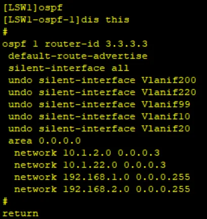
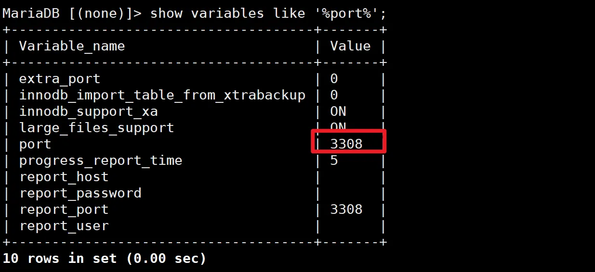
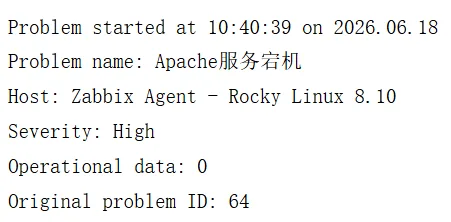

企业云数据中心运维实训
这是我做过体量最大的一次实训：从零搭一个小型云数据中心——三层网络打底，数据库拆多实例，Web 做高可用与负载均衡，全链路加监控，最后用虚拟化平台把物理资源池化。这一页放报告的目录、几张关键实施截图和一段复盘，作为"84 页报告"这句话的证据。
报告目录与结构
| 部分 | 内容 | 页码 |
|---|---|---|
| 一、项目介绍 | 背景、需求、目标 | 1 |
| 二、项目设计方案 | 项目拓扑图、IP 地址规划表 | 2–4 |
| 三、项目实施 | 网络搭建（5–50）；MySQL 多实例部署（51–53）；Nginx 源码安装与高可用部署（54–61）；Zabbix 监控 Web 与数据库服务（62–69）；FreeVM 虚拟化平台部署与创建虚拟机（70–77） | 5–77 |
| 四、项目测试及结果展示 | 网络测试、数据库多实例测试、Nginx 高可用测试、Zabbix 监控测试、FreeVM 部署与虚拟机测试 | 78–83 |
| 五、项目总结 | 收获与不足 | 84 |
关键截图




复盘：我做了什么、卡在哪、怎么解的
做了什么。按"先网络、再服务、后监控与虚拟化"的顺序推进：网络层占了实施篇幅的一大半（第 5–50 页），VLAN 按服务器区 / 存储区 / 管理区 / DMZ 分区，汇聚层 MSTP 多实例分担链路、VRRP 做网关冗余，核心层 OSPF 自动发现路由，双防火墙 HRP 主备同步状态；服务层做了 MySQL 多实例隔离部署和 Nginx + Keepalived + HAProxy 的高可用与负载均衡；监控层用 Zabbix 把 Web、数据库和主机指标全量接进来并打通邮件告警；最后在 FreeVM 上建集群、创建虚拟机并做在线迁移。每一层做完都在测试章里留了一组对应的验证，不是搭完就算完。
卡点一：OSPF 的放行口径。为了不让无关接口泛洪 OSPF 报文，我用了 silent-interface all 再逐个 undo 业务 VLAN 的写法，代价是漏放一个网段，那一段就整段不通，还不好定位。解法是笨办法但管用：每台设备配置后立刻 dis this，把放行清单和设计阶段的 IP 规划表逐项打勾对齐（上面的 OSPF 截图就是核对时的配置）。这件事让我养成了"先规划表、后敲配置"的顺序。
卡点二：Keepalived 只停服务不漂移。最初的配置在节点宕机时能漂移，但只停掉 Nginx 进程时 VIP 不走、访问直接失败。后来把健康检查改成监控服务本身的 vrrp_script，并把扣分幅度算好（主节点 100 分扣 20 到 80，低于备机的 90 才触发漂移），停进程、停节点、停后端三种故障都实测通过。这段完整的配置和实测过程我单独写成了博客文章：Nginx + Keepalived + HAProxy 高可用实测。
卡点三：Zabbix 测不到业务指标。内置模板只有主机层面的 CPU、内存，而我真正关心的是 PHP-FPM 还活着几个进程、PHP 到 MySQL 的连接通不通。这两个指标只能自己写 UserParameter 采集，再配触发器。最后用"主动停掉 Apache"做了一次端到端告警测试，收到 High 级别邮件才确认这条链路是真的通的（见上方截图）。
一句话总结。这个项目教会我的不是某个命令，而是一套节奏：规划先行、逐层验证、出问题先看状态表（STP 状态、HAProxy 统计页、show variables）再动配置。
关于完整报告
完整报告包含实验环境的地址规划与设备配置全文，不在网上公开。需要查阅的话，可以在面试时当面屏幕共享展示；也可以先通过关于我页面的邮箱联系我说明用途。
另一个项目详情：企业网络系统规划与建设实施（45 页报告）
最后更新于 2026-10-31